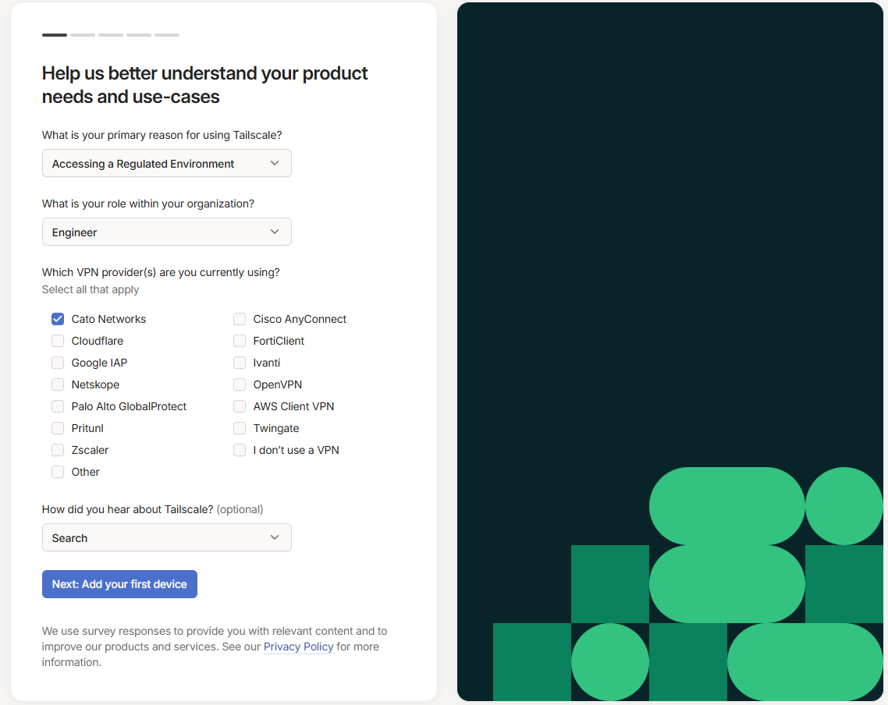
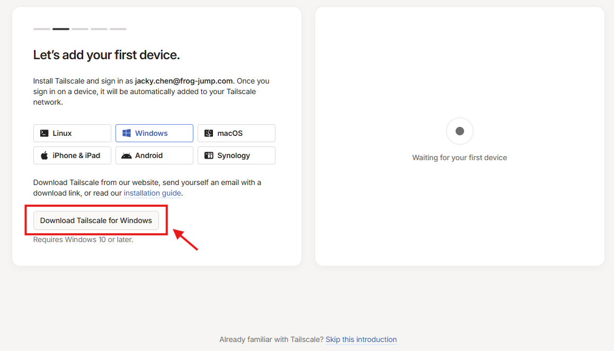
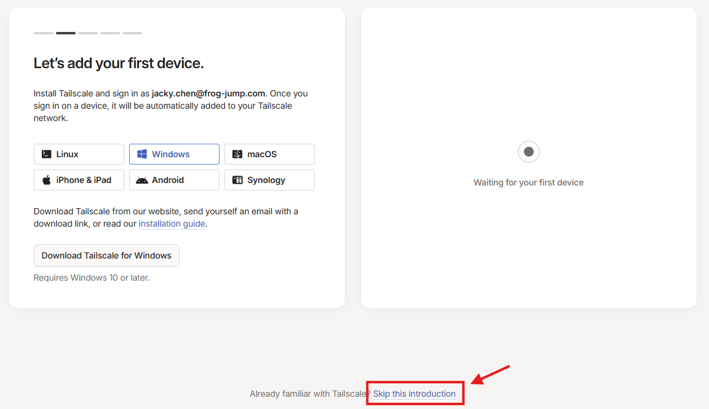
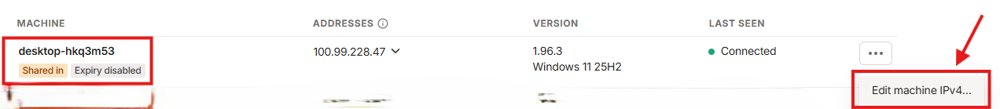
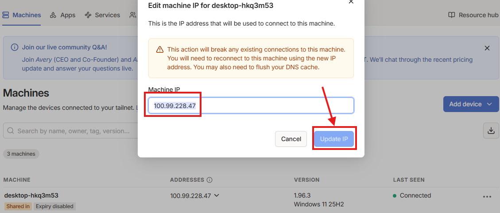

執行下載的檔案，按照螢幕指示完成安裝。

安裝後，開啟 Tailscale 應用程式，點擊登入按鈕，前往 https://login.tailscale.com/ 使用 Google、Microsoft 或 GitHub 帳戶登入。

點擊以下邀請連結加入區網：
https://login.tailscale.com/admin/invite/ePRHHyMKKkBL99uY67b921
連結會自動將您加入網路。

在 Tailscale 應用程式中，檢查您的裝置是否已連接到網路，並查看其他裝置列表。

嘗試連接到網路中的其他裝置，例如 ping 一個 IP 位址或開啟共享檔案，確認一切正常。
最後，前往 https://login.tailscale.com/admin 管理網路並連接到指定網域。
